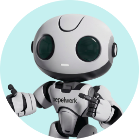

Option 01 · Long-form Episodic
FUTURE-PROOF
A documentary series built for YouTube
Talex Media
The audience already voted for this topic
39,446
views on your channel
More than thirteen times your next best video
You never put a dollar of promotion behind it
This is the show built for
8 MILLION
roughly 8 million Americans you told us you are really after
A documentary series built for YouTube
Featuring one story per episode
Whose role was automated away
Got laid off
Whose degree never turned into work
Now overcome those setbacks to land in a future-proof position
She starts telling the story of the year her job disappeared
→
Arie guides her through her story
→
She found her new job and regained her sense of purpose
It humanizes your AI
Arie draws the story as the interviewer
pepelwerk positioned as the catalyst that propelled their success
Netflix documentary meets 60 Minutes
Dig into the characters and really get to know our subjects on a human level
60 Minutes visual style where we get to see both sides of the interview
The interviewer takes on a supporting role to the interviewee
Why long-form episodic wins over time
One-off videos are not appointment content
A returning series is what people come back for
Trust builds in small moments repeated over time
The topic already pulled 39,446 organic views, and clearly resonates with your audience
For a pilot
Production $40k to shoot
Animation, initial build and library $40k
Production $35k per episode
Animation $7k per episode